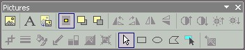
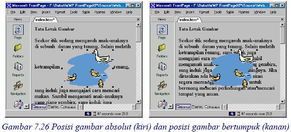
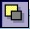
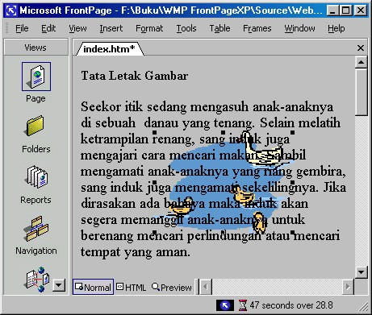
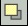
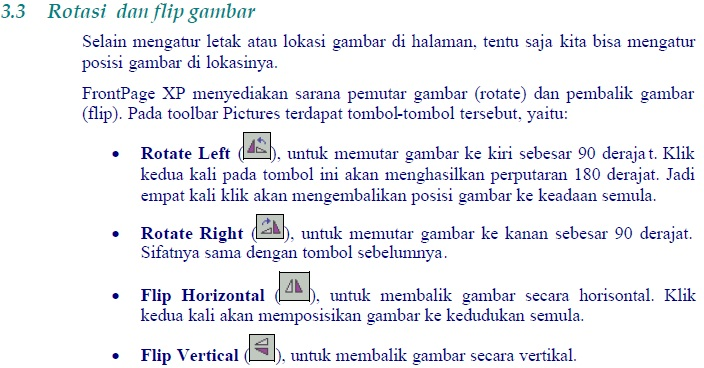
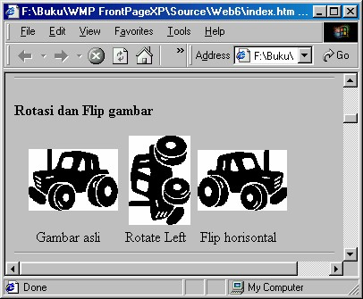

3 Tata letak gambar
Pembahasan berikutnya banyak menggunakan toolbar Pictures. Dengan toolbar
tersebut kita bisa melakukan beberapa aspek pengaturan, seperti tata letak gambar,
tampilan gambar dan hyperlink gambar. Kita mulai dengan tata letak gambar yang
memiliki tiga unsur pengaturan, yaitu menentukan lokasi gambar di halaman dan
menentukan posisi gambar di lokasinya.

Gambar 7.25 Toolbar Pictures
Cara pemakaian toolbar Pictures adalah:
1. Klik gambar.
2. Klik tombol yang Anda inginkan.
3. Untuk membatalkan, tekan CTRL + Z.
3.1 Memindah gambar
Pada halaman, Anda dapat memindahkan gambar secara cepat dengan men-drag
gambar tersebut ke lokasi tujuan.
Anda juga bisa menjala nkan proses drag ke halaman yang sedang terbuka dari
berbagai sumber, seperti berikut ini:
o Dari folder list
o Dari Windows Explorer.
o Dari My Computer.
o Dari Internet Explorer.
o Dari dokumen office (Word, Excel dan seterusnya).
o Dari aplikasi windows apapun yang menerapkan metode drag and drop.
3.2 Posisi absolut
Gambar bisa bertumpuk dengan teks, bisa juga tidak bertumpuk. Selanjutnya, kita
bisa mengatur apakah gambar berada di atas tumpukan atau di bawah tumpukan.
Pembahasan ini sebenarnya membicarakan tentang posisi gambar maupun teks pada
sumbu z. Posisi tidak bertumpuk berarti nilai posisinya pada sumbu z sama,
sebaliknya jika nilainya tidak sama maka keduanya akan bertumpuk. Yang bernilai
besar akan terletak di atas tumpukan atau di depan.
Untuk mengatur posisi gambar maupun teks terhadap sumbu z, FrontPage telah
menyediakan tombol-tombol pada toolbar Pictures.
• Tombol Position Absolutely ( ), akan menghasilkan posisi absolut
gambar, yaitu gambar tidak bertumpuk dengan teks, lihat Gambar 7.26 kiri.
Bandingkan dengan gambar kanan, yaitu gambar menumpuk ke teks
sehingga teks tidak tampak.

Gambar 7.26 Posisi gambar absolut (kiri) dan posisi gambar bertumpuk (kanan)
Anda bisa memindahkan gambar ke posisi yang Anda inginkan dengan drag
gambar ke lokasi tersebut.
• Tombol Send Backward ( ), akan membawa gambar ke belakang teks
sehingga kita bisa melihat teks, lihat Gambar 7.27.

Gambar 7.27 Gambar di belakang teks
• Tombol Bring Forward ( ) untuk membawa gambar ke depan teks.
Pemakaian tombol-tombol di atas tidak hanya untuk kombinasi teks dan
gambar, namun bisa juga untuk objek lain seperti gambar dan gambar.
Jumlah objek yang bisa Anda gunakan tidak hanya dua, bisa lebih.


Gambar 7.28 Berbagai posisi gambar
Copyright © Herlan Lesmana
Created with the Freeware Edition of HelpNDoc: Free Web Help generator